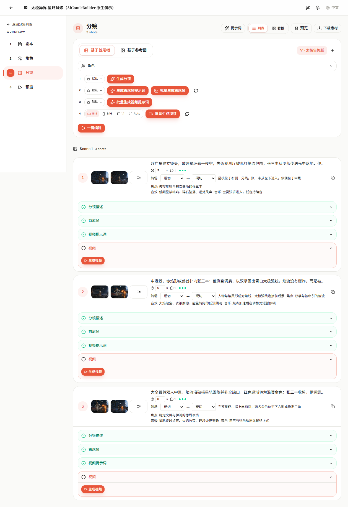

01 / CONTROL
AIComicBuilder
决定当前工序、准备上下文、创建任务、保存版本、展示审核状态。
AIComicBuilder 不是底层视频模型，也不是万能 Agent。它控制整个生产流程，在关键节点指挥 Agent 和生成模型执行任务，持续保存结果、推进审核与返工，最终实现目标短剧视频。
基础模式下，AIComicBuilder 是流程控制者，Agent 是可插拔的智能执行节点。Agent 返回结构化结果后，工作台写入数据库并决定进入下一步还是返工。
决定当前工序、准备上下文、创建任务、保存版本、展示审核状态。
完成小说改编、角色分析、导演分镜、提示词和质量判断。
OpenAI、Gemini、Kling、Seedance、Veo、Wan 等生成文字、图片和视频。
逐镜结果经字幕、转场、BGM、片头片尾和 FFmpeg 合成为短剧。
按钮或“一键续跑”只是入口，真正的核心是任务状态和可重复执行的生产节点。
它的价值不是让单次生成更快，而是让长期的 Agent 生产过程可见、可控、可审核、可返工。
